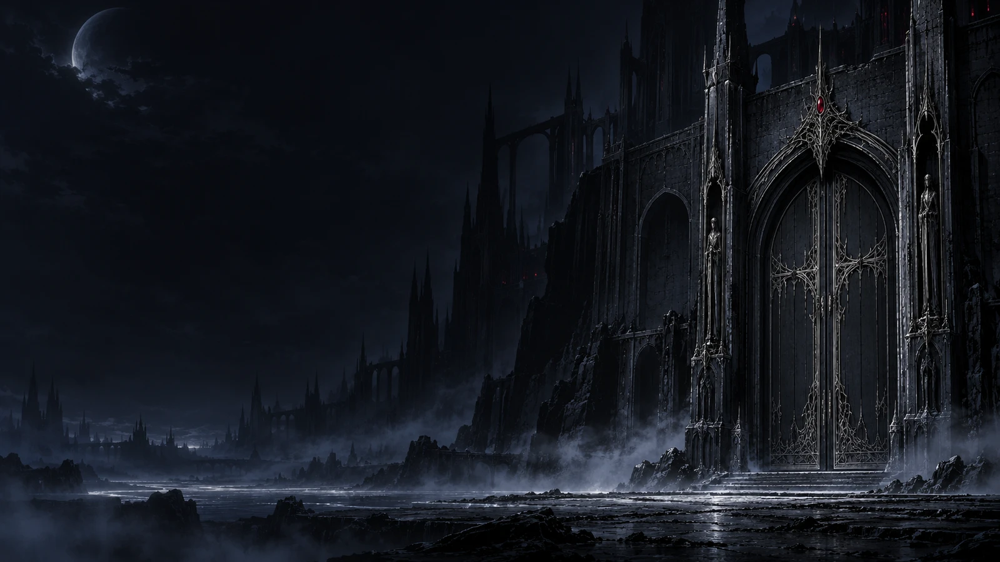
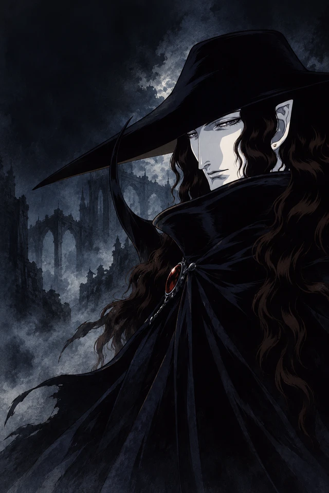
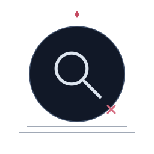
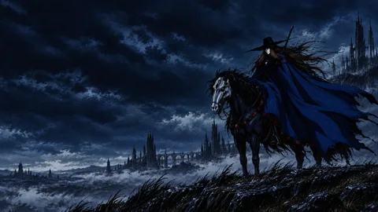
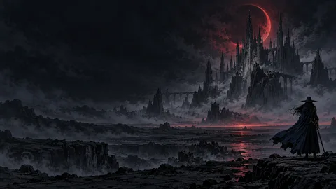
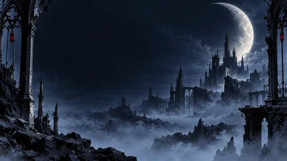
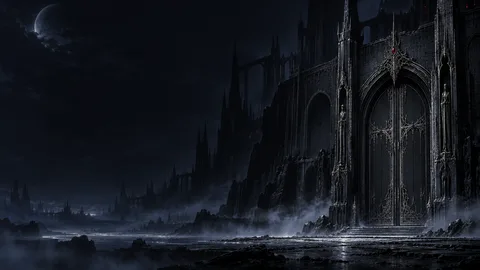
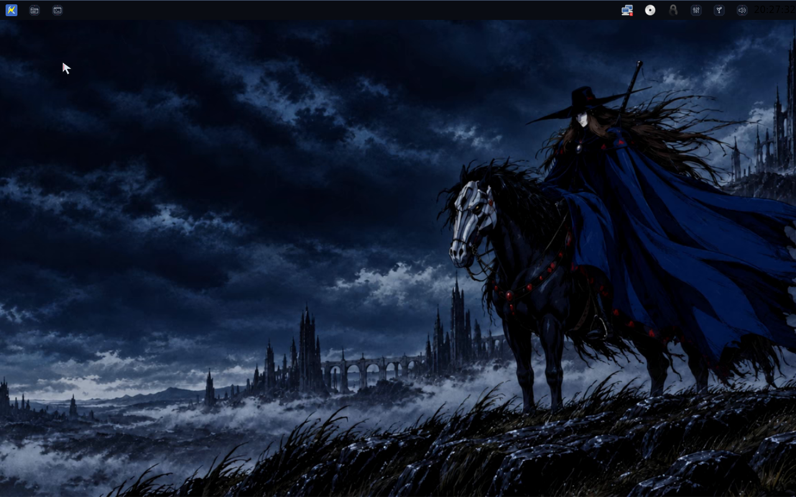
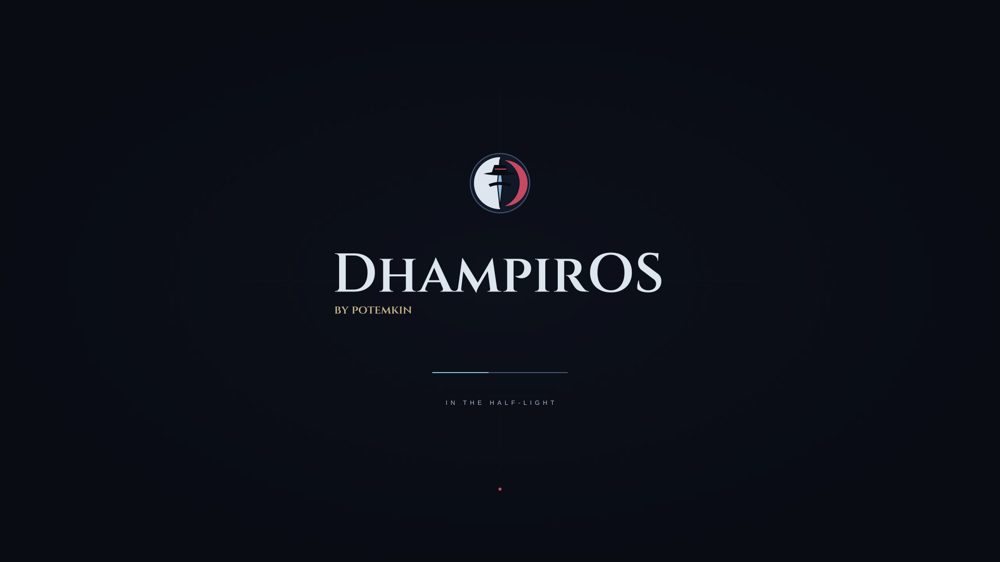

Bootable image
Boot in a virtual machine to explore the desktop. Hardware installation support must be confirmed in the release report.
SHA-256 fingerprint
A VAMPIRE HUNTER D–INSPIRED LINUX PROJECT
by potemkin
At home in the half-light.
A midnight desktop. Silver edges. A frontier that stirs in the wind. Explore the visual world of a custom Kicksecure-based OS.
Experimental alpha images · interactive visual preview
A LITTLE TIME INSIDE
Open the launcher. Move a window.
Find your corner of the night.

user
A visual study of the login surface.

THE FRONTIER AWAITS.THE REAL THEME ASSETS

No icons match that search.
THE WORLD BEHIND THE WINDOWS
Choose a scene to see it
on the desktop above.




Original project artwork. The rider's rain, hair, mane, cloak and grass share a restrained, seamless 24-second motion study.
TAKE THE FRONTIER WITH YOU
The full DhampirOS desktop, built on Kicksecure. Choose a bootable image or an appliance for your virtual machine.
Experimental alpha for isolated VM testing. Read the verification report and remaining limits before use.
Before persistent use: the alpha retains upstream passwordless local autologin and account setup. Configure account credentials before keeping personal data in a VM.
Boot in a virtual machine to explore the desktop. Hardware installation support must be confirmed in the release report.
Import a ready-made machine into VirtualBox. Review its network and device settings before the first start.
Experimental alpha. Checksums detect changed downloads; the verification report records the checks actually performed and any remaining limits. DhampirOS is an independent derivative and has not received a security certification.
The published OVA also reached its desktop in VirtualBox 7.2.22 on Linux, under BIOS and UEFI, with network and host integration disabled. Physical hardware, Secure Boot and Windows/macOS VirtualBox hosts remain untested. The later boot review supplements the original verification report.

IDENTITY

Primary system mark.

Shield-form secondary mark.

Compact identity asset.
Login/account artwork.
#090C13#111827#192438#43536D#A7B4C9#DDE5EF#C54A61#8BB8DA#A79ACA#9BBFA8#CFB483#C9B78EBOOT + UNLOCK


UNLOCK
The supplied unlock-panel artwork keeps the authentication surface sparse and legible.
CURSORS
 default
default pointer
pointer text
text crosshair
crosshair grab
grab progress
progress wait
wait not allowed
not allowedThe full pack includes 24 named cursor roles, multiple sizes, aliases and animated wait/progress variants.
SESSION LANGUAGE


LOGIN IDENTITY
One of the supplied account/avatar treatments for the login surface.
INSTALLER
 Welcome
Welcome Storage
Storage Users
Users Install
Install Finished
FinishedThese stage glyphs are actual supplied installer assets. They describe presentation only; disk operations remain the distro build's responsibility.
SYSTEM STATES
 No network
No network Permission denied
Permission denied Update available
Update available Recovery
RecoveryPROJECT STATUS
The first alpha images have passed the published VM checks. Vulnerability tracker findings and runtime limits remain in the verification report.